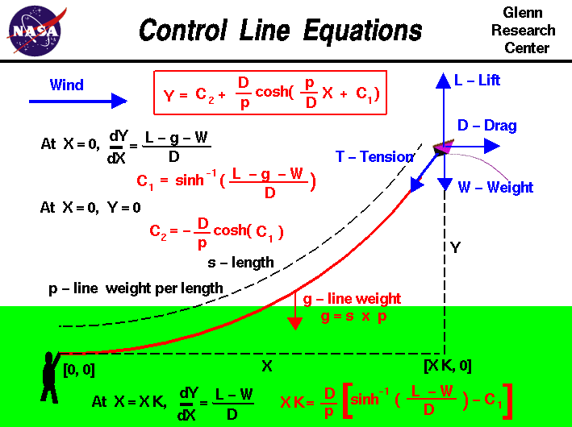

|

An excellent way for students to gain a feel for
aerodynamic forces
is to fly a
kite.
The motion of the kite through the air is the result of
forces
being applied to the kite. The kite responds to these forces according to
Newton's
laws of motion.
When the kite is in cruising
flight
you will notice that the
control line
produces a gentle curve from the hand of the flyer to the kite
as the line sags under its own weight.
There are mathematical equations which describe the sag of the
control line, and we can use these equations to determine the
altitude of our kite mathematically.
A co-ordinate system is established with the X axis along the
ground, the Y axis perpendicular to the ground, and the origin
in the hand of the kite flyer.
The kite is subjected to four main forces; the
lift L, the
drag D, the
weight W, and the
tension T in the control line.
The control line has a certain length s and the weight of the
control line is evenly distributed along the length at p weight
per length of line. The total weight of the control line is designated
g and is given by:
g = s * p
Because the weight of the control line is evenly distributed along the length,
the line hangs under its own weight. There is
a differential equation which describes the
transmission of forces along a line.
The math involved in the derivation and solution of this equation is
taught in second year calculus classes and is beyond the scope of
this Beginner's Guide.
But solving the differential equation, we can relate the shape of the control
line (Y versus X) to the distribution of the tension in the control line.
The resulting equation is shown in the red box at the top of the page.
Y = C2 + (D/p) * cosh [(p/D) * X + C1]
C1 and C2 are called constants of integration
which are determined at the boundaries of the problem.
The symbol cosh indicates the hyperbolic
cosine function. This is just a tabulated
function,
like the trigonometric
cosine, sine, and tangent,
but with different values for a given input. There
is also a hyperbolic sine, sinh, and a hyperbolic tangent, tanh,
which we won't need for this problem.
The equation in the red box is called a Catenary and was developed
many years ago to describe cables hanging under their own weight. Other examples
would include telephone wires, cables on a suspension bridge, and even a jump
rope!
To solve for C1 and C2 we first use the boundary condition that at X=0, Y=0.
Plugging X=0 and Y = 0 into the catenary equation gives a
relationship between the two constants:
C2 = -(D/p) * cosh (C1)
So if we can determine C1, we now know C2. To get C1 we note that at the
origin (X=0) the slope of the control line (dY/dX) is equal to the ratio of
the component forces.
At X=0, dY/dX = (L - g - W) / D
Taking the derivative of the catenary equation gives:
dY/dX = sinh[ (p/D) * X + C1]
Plugging in X=0 and the value for dY/dX at X=0 gives the equation:
C1 = sinh^-1[(L - g - W) / D ]
where sinh^-1 indicates the inverse hyperbolic sine
of the expression.
That just means that the sinh(C1) is equal to (L - g - W) / D. There are
tables of inverse hyperbolic sines, just like there are tables of inverse sines
in trigonometry.
With this value of C1 and the other equation to get C2 as a function of C1, we
now know the equation of the entire length of the control line.
The kite flies at some distance XK downwind from the flyer. At the
kite we know that the
slope
of the control line is given by:
At X=XK, dY/dX = (L - W) / D
We can use this information to determine the length XK for a given length
of string s. This equation is given at the bottom:
XK = (D / p) * [sinh^-1((L - W) / D) - C1]
The dependence on s is hidden in the constant C1. We could instead write:
XK = (D / p) * [sinh^-1((L - W) / D) - sinh^-1((L - W - p*s)/D)]
If we then plug this value of XK into the catenary equation, we can solve for theheight Y at which the kite is flying above the ground.
Notice that the
shape of the line is not a straight line, so we can not use trigonometry to
get the height for a given length of line. If the line were straight, we
could determine an angle b which is the slope of the line:
dY/dX = tan(b) = (L - W) / D
then:
Y = s * sin(b)
The mathematical equations for the catenary are pretty messy!
So we have written a computer
program to solve them for you.
You can use the
KiteModeler computer program to solve these equations
for a kite which you can design.
You can then build your own kite from your design and compare the actual
flight performance to this computer prediction.
You can determine the
altitude at which you kite actually flies
by taking some measurements and using some simple math techniques and a
little graph paper.
With a little more mathematical
knowledge you can calculate the altitude at
which the kite is flying. In this case, you can use trigonometry, because
it is based on a line of sight which is a straight line.
Enjoy flying ... but always fly
safely.
Activities:
Guided Tours
Navigation ..


- Beginner's Guide Home Page
|